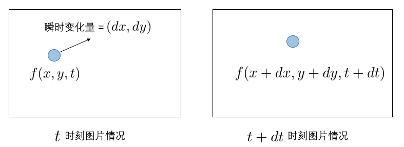
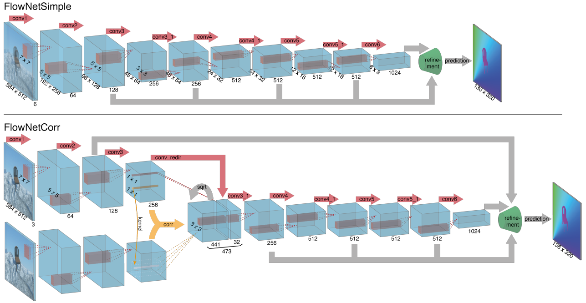
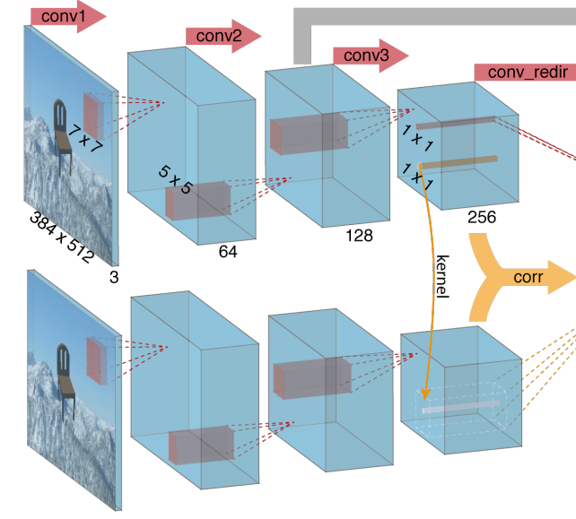
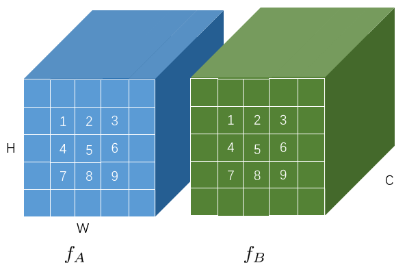
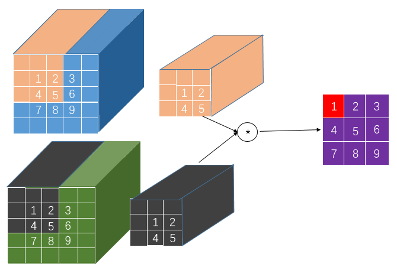
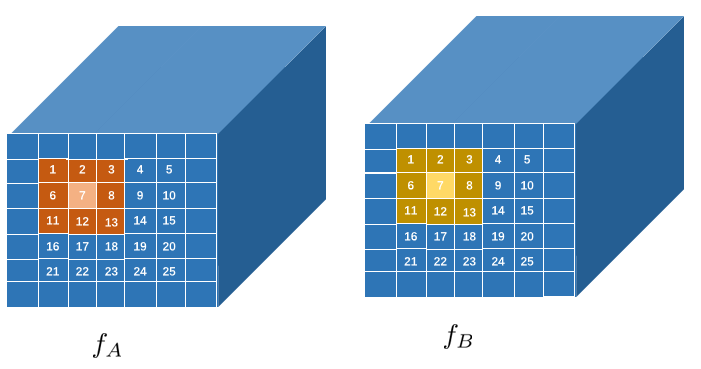
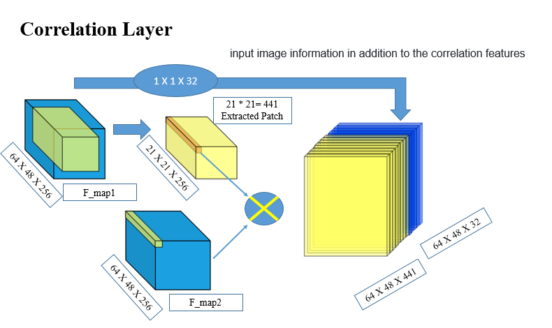
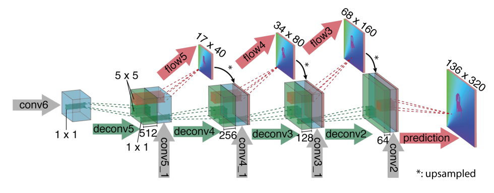

基于FlowNet的光流估计
我为什么要写这篇文章？
因为我最近在读FlowNet【1】这篇论文，虽然网上多多少少有一些相关的博客，例如【2】【3】，但我发现很少有对这个论文中的一些细节介绍得比较详细的review，所以本文就出现了。本文会先简要介绍一下光流的概念，主要的重心还是在FlowNet这个论文一些细节的介绍上。
我会延续自己的风格，尽最大的努力，用intuitive的表述来介绍相关概念和算法流程，当然也包括数学公式。如果你觉得本文哪里还是有问题，请毫不犹豫地怀疑是我错了，无论是理解错误、表述错误、还是打字错误，并在评论区指出。
1. 光流的基本概念
光流（Optical Flow）呢，这是一个有关物体运动的概念。这个概念最早由Gibson提出，描述的是空间中运动的物体在成像平面上，造成像素运动的瞬时速度。这个运动主要包括三大类：
- 场景中前景目标本身在移动；
- 成像平面在移动（比如，相机）；
- 或者两者共同运动而所产生的混合动作。
反正无论怎么运动吧，在时序上，必然是会产生一些列连续的图像帧，而且这些帧之间的像素有有一定的对应关系。比方说，视频的第$t$帧在左上角有一只鸟，经过10帧后（即第$t+10$帧时），这只鸟成像在了图片的右上角，并且这个“飞”的过程是连续，从而形成一系列连续变化的图像（也就是连续的10帧），产生类似光“流动”的效果，故被简称为光流（Optical Flow）。
光流是一个有方向、有长度的矢量，我们需要做的就是，根据2个连续的帧来求解对应像素的运动速度（你说偏移量也没问题），下图是光流问题的一个示意图。

在光流中，有个亮度恒定假设（Brightness Constancy Assumption）,即同一物体在连续的帧间运动时，其像素值都不会改变（也就是上面举例说的，那只鸟不会因为飞了一下就变了样子）。根据该假设可以得到：
而根据泰勒公式可得$f(x, y, t)=f(x, y, t)+\frac{\partial f}{\partial x} d x+\frac{\partial f}{\partial y} d y+\frac{\partial f}{\partial t} d t$，
从而有$f_x \frac{dx}{dt}+ f_y\frac{dy}{dt}+f_t=0$，记$u=\frac{dx}{dt},v=\frac{dy}{dt}$分别为光流沿着$x$和$y$方向上的变化量，从而可以得到以下光流基本方程：
其中$f_x,f_y,f_t$均可以有连续两帧计算得到，这显然是一个由一个方程求解两个未知量的问题，需要添加约束，而根据约束条件的不同，就导致了不同的光流场计算方法。下面简单介绍两种已有的方法，传统的H&S【参考文献】和FlowNet【参考文献】，各自代表了传统方法和基于深度学习的方法两类。
2. Horn & Schunck
Horn & Schunck【4】光流估计法在光流基本方程的前提下，作出了光流平滑约束（Smoothness constrain），即认为光流的变化是光滑的，于是问题可以转化为最小化：
被积函数是一个泛函数（即关于函数的函数），可以用变分法来求解。根据欧拉-拉格朗日方程（这个可以搜一下相关的数学证明，我记得Youtube上有个很棒的推导）可以求得：
其中$\nabla^{2} u = u{xx}+u{yy}$，也就是二阶导，而在离散情况下，可以用Laplacian算子来求解二阶导，即用$u-u{avg}$来代替$\nabla^{2}u$，其中$u{avg}$为每个位置对应上下左右四个位置的平均值，从而有：
于是可以得到如下解析解：
用迭代的方法可以很容易求解光流。
PS:如果你对这一小节的数学推导不太明白，我强烈建议你去看一下Mubarak Shah教授的关于光流的Lecture【5】。>>传输门<<
3. FlowNet
FlowNet是第一个用CNN来估计光流的工作，并将光流估计这个问题看做成一个有监督的问题。其实说白了，光流估计就要根据两张连续的帧，去估计（也就是，猜）两帧之间pixel-wise的光流。凡是有关估计相关的东西，CNN都很在行，只要有足够的训练数据和一个较好的网络结构。FlowNet就开辟了这个工作，也创造了一个数据集。
>>FlowNet到FlowNet2.0：基于卷积神经网络的光流预测算法<<，这篇文章对FlowNet、FlowNet2都做了很好的介绍，建议移步去看看再过来，我这里就专注于网络中的细节了。
3.1 网络整体设计
在FlowNet中，作者设计了如上图所示的两种不同的架构：

- 把相邻两帧concat到一起作为网络输入，然后经过一些列的conv、pool、upsample等等又最终refine到和输入图片一样的大小，并得到估计的光流结果，这种架构简称为FlowNetS，也就是Simple的意思。
- 因为估计光流实际上就是去让网络做像素级别的matching，于是作者提出了另外一种基于Correlation Layer的架构，简称为FlowNetC，也就是Correlation 的意思。
3.2 Correlation Layer
First thing first，也就是网络中的Correlation Layer。先看下FlowNetC网络在Correlation Layer之前的设计，作者设计了3个卷积和池化操作，得到了比较粗粒度的feature maps，这个部分，对于两帧都是共享的，也就是说两张图片都会过一遍这个部分。

现在假设两张图片经过这个部分，分别得到各自的featur maps为$f_A \in R^{C*H*W}$和$f_B\in R^{C*H*W}$，$C,H,W$分别代表特征图的通道数、高度和宽度，如下图所示，图中假设$H、W$都为3，非数字部分是一圈padding。

我们现在假设这个特征图中提取到的是图片的一些速度之类的信息（我瞎说的），然后我们希望可以根据$f_A$和$f_B$的每个位置相似度来得到一些关于两张图片偏移量的信息，那怎么求呢？
很简单的一个想法就是，对于$f_A$和$f_B$上的每个位置的组合，我们都求一次二者的相似度，比方说，我们想去求$f_A$和$f_B$在位置1处的相似度。但是一般我们都不会真的只求一个像素的相似度（准确地说，这里不应该叫像素，而是特征图上的每个cell），因为图片像素的特征往往都是和相邻特征是有关的，相应地，在特征图上，也就是相邻的cells是有关系的。于是为了求某个位置在两个feature maps上的相似度，我们会求以这个cell为中心的两个patch的相似度，并将这两个patch的相似度作为这个中心cell的相似度。如果我们去patch的大小为3，那么$f_A$和$f_B$在位置1处的相似度如下图所示，分别用橙色框和灰色框表示。

也就是论文中的
假设patch的大小为$K=2k+1$,每一次的相关性操作的计算量为$c*K^2$,其中$c$是特征图的通道数。对于$fA$和$f_B$上的每个位置的组合（即$f{A1}$和$f{B1},f{B2}…f{B_9}$，$f{A2}$和$f{B1},f{B2}…f{B_9}$…一直到$f{A9}$和$f{B1},f{B2}…f{B_9}$），那么总的计算量为$c*K^2*W^2*H^2$,这也太大了。
于是作者作出了限制，理念就是说，虽然相邻的特征之间有关系，但也不至于要相邻到整个特征图的大小上去，现在我们假设特征图的大小不再是$3*3$的，而是$5*5$的，如下图所示，这里也加了一圈padding。

现在我们定义一个邻居框，这个框的大小记作$D=2d+1$，如果我们假设$D$取值为3的话，那么我们认为，位置7处的值只和{1,2,3,6,7,8,11,12,13}处的值关系有关，和其他位置的关系不大。和之前说的一样，在求相关性操作的时候，也是基于patch的（即以当前cell为中心）。举例来说，$c(f{A7},f{B7})$就是上面橙色框和黄色框的卷积。
于是，在添加了邻居框后，对于输入$fA$中的每个cell，都会在$f_B$中存在一个相应的邻居框内，且和框内每个cell都存在一个相关度（即$D^2$个），我们把这个$D^2$个相关度在输出时按照channel维度上叠加起来，从而correlation layer的输出特征图$f{out} \in \mathbb{R}^{D^2*H*W}$。
Ok，但愿我已经把这个细节操作讲明白了。别急，还没完，这只是细节1。
细节2：其实在上面画图的时候，我是特意画了一圈padding的，因为我们要保证特征图上的每个cell都有一个patch。我想可能说作者嫌麻烦，索性把patch的大小$K=2k+1$中$k$取了0，于是就成了$1*1$大小的patch，很类似$1*1$卷积核，就不需要再考虑padding操作了，瞬间简单了许多。
细节3：在FlowNetC中，$D=2d+1$中的$d$取值为20，即$D=41$，也就是说，输出特征图$f{out} \in \mathbb{R}^{D^2*H*W}=\mathbb{R}^{1681*H*W}$。channel维度1681个dimension？？？你想多了，这里又是一个细节。作者又加了一个stride操作，从而让$D=21$，于是correlation layer层的输出特征图$f{out} \in \mathbb{R}^{441*H*W}$。
- 细节4：你以为细节3完了就没了？ 对不起，还是没完！上面我们只是得到了correlation features，作者还在$f_{out}$的channel维度上添加了关于图片特征的信息，也就是论文图2中的
re_dir部分。
这下是真的讲完了，总的来说，可以归结为下面这个图（图来创作于Abbas Khan）

3.3 Refine部分
这一部分没什么太多隐藏的细节，按照下图coarse-to-fine的思路在上采样时不断把之前的特征融合就好了。

4. FlowNet2
5. 代码
以后会慢慢补充
References
【1】Philipp Fischer et al., FlowNet: Learning Optical Flow with Convolutional Networks, arXiv:1504.06852v2
【2】SIGAI, FlowNet到FlowNet2.0：基于卷积神经网络的光流预测算法
【3】肖泽东 Shon, 光流估计——从传统方法到深度学习
【4】B. K. P. Horn and B. G. Schunck. Determining optical flow. Artificial Intelligence, 17:185–203, 1981. 2
【5】Mubarak Shah, UCF Computer Vision Video Lectures 06 - Optical Flow